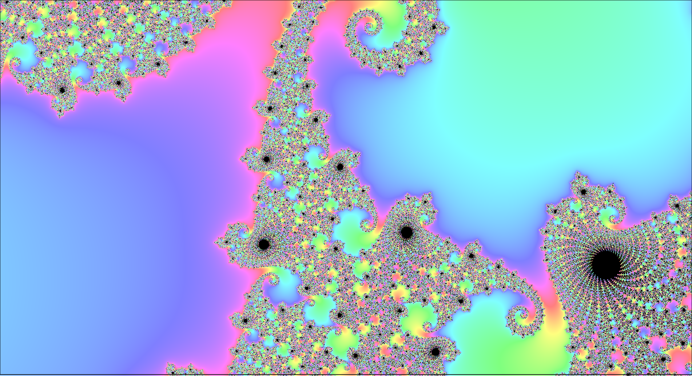

The Mandelbrot set is a set defined in the complex plane by the formula $f_c(z) = z^2 + c$, where $c$ is a complex number starting at z = 0 . The algorithm is then the sequence $f_c(0)$, $f_c(f_c(0))$, etc. For the Mandelbrot set, this function is evaluated for each pixel on the screen. If the number of iterations exceeds the max number of iterations (the function diverges at c), then the color is black. Otherwise, the number of iterations it took to become unbound is plotted as a color (HSV in the above picture). Since the Mandelbrot set is closed, values that exceed the radius $|Z_n| > 2$ are considered unbound.

One of the initial challenges is converting screen-space coordinates ([x, y] starting from the top-left) into complex coordinates (0, 0 in the center). Since z is a complex number, we can represent z as $z = x + iy$. Then, $z^2 = x^2 + 2xyi - y^2$. Finally, c is our initial condition, so $c = x_0 + iy_0$. Therefore, $x = Re(z^2 + c) = x^2 - y^2 + x_0$ and $y = Im(z^2 +c) = 2xy + y_0$.
for (x_0, y_0) in screenspace:
x1 = 0
y1 = 0
iter = 0
zn = 0
// Main escape algorithm
do
y1 = 2 * x * y + y_0
x1 = x*x - y*y + x_0
zn = x1*x1 + y2*y2
iter += 1
while zn < = 4 and iter < MAX_ITERS
From here, we apply a smooth coloring algorithm, and convert to HSV
nsmooth = iter + 1 - log(log(zn)) / log(2)
hue = 0.95 + 10 * nmsooth
saturation = 0.6
value = 1.0
pixel = HSVtoRGB(hue, saturation, value)
Of course, this runs into an obvious problem: These operations are extremely expensive to run per-pixel Fortunatetly, this problem is embarassignly parallel, and I leverege OpenMP's pragmas and x86 SIMD instructions for a ~12x performance boost compared to single-thread, non-SIMD workload.
The main bottleneck of the algorithm is fairly clear: Each pixel has to run at least 6 multiplications for each iteration count. For an iteration count of 1000, a 1920x1080 display, and assuming 10 instructions in the inner loop, we can approximate $2.073*10^{10}$ instructions per frame, not even including the work done before and after the inner loop. Again, with some rough math, assuming a CPU clock speed of ~4 GHz would take over 2 seconds to render a single frame! In reality, it doesnt take nearly this long since many parts of the Mandelbrot set diverge far before the iteration count.
With optimization, there's two main choices you can make: work smarter or work harder. There are some excellent optimizations we can make to the main algorithms (See peridocity checking, bulb checking, and distance estimations), but these can be difficult to both understand and implement. Instead, we're taking the second approach by utilizing all the power from an x86 CPU. However, the best optimization should be a combination of both methods, but I will just demonstrate one.
One of the best ways to improve the speed of a program is to split the work among as many CPU thread as possible. Multithreading involves performing execution tasks on different CPU threads, which can directly improve the throughput of all programs. Parallelism allows us to run different threads on the same task simultaneous, provided the task can allow for it. Fortunatetly, parllelism in C/C++ is (somewhat) trivial with the OpenMP pragmas, which will automatically parallelize our outer for loop:
#pragma omp parallel for
for (int i = 0; i < SCREEN_WIDTH * SCREEN_HEIGHT; ++i)
Since the early 2000's, most x86 ISAs contain a set of special registers and instructions that are purpose built for parlell compute on the CPU. Starting with Intel's Streaming SIMD Extensions SSE, 8 new registers labeled XMM0-XMM7 were added, which could store four 32-bit single precision floats. Later extensions would add more registers, 64-bit double precision floats, and wider lanes (See AVX and AVX-512). The previous escape time algorithm can be modified to support these instructions:
do
{
// xtemp = x*x - y*y + x0;
__m256d xtemp = _mm256_add_pd(_mm256_sub_pd(_mm256_mul_pd(x, x), _mm256_mul_pd(y, y)), x0);
//y = 2*x*y + y0;
y = _mm256_add_pd(_mm256_mul_pd(_mm256_mul_pd(x, y), _mm256_set1_pd(2.0)), y0);
//Previous function uses x, so we didnt want to update the actual value of x until now.
x = xtemp;
//zn = x*x + y*y
//Blend zn with the invert of the mask, so we can stop calculating values of zn when we escape
zn = _mm256_blendv_pd(_mm256_add_pd(_mm256_mul_pd(x, x), _mm256_mul_pd(y, y)), zn, _mm256_xor_pd(mask, _mm256_set1_pd(-1.0)));
//zn > 4
__m256d cmp = _mm256_cmp_pd(zn, _mm256_set1_pd(4.0), _CMP_LT_OQ);
//Creates a new mask. If a cmp lane is set to 0, set the corresponding mask lane to 0.
mask = _mm256_and_pd(mask, cmp);
__m256i plus_one = _mm256_add_epi64(iters, _mm256_set_epi64x(1, 1, 1, 1));
iters = _mm256_blendv_epi8(iters, plus_one, _mm256_castpd_si256(mask));
iter++;
} while (_mm256_movemask_pd(mask) != 0x0 && iter < MAX_ITERS);
The algorithm now has to deal with the added complexity of dealing with 4 values at the same time! To start, let's deal with the initial xtemp line
__m256d xtemp = _mm256_add_pd(_mm256_sub_pd(_mm256_mul_pd(x, x), _mm256_mul_pd(y, y)), x0);
__m256d is the SIMD register that holds our values. Specifically, this is saying "I hold 256 bits of type double", which is 256/64 = 4 doubles.
zn = _mm256_blendv_pd(_mm256_add_pd(_mm256_mul_pd(x, x), _mm256_mul_pd(y, y)), zn, _mm256_xor_pd(mask, _mm256_set1_pd(-1.0)));
This is analogous to zn = x*x + y*y, but now there's two functions: _mm256_xor_pd() and _mm256_blendv_pd(). When a value in zn exceeds 4.0, we need to make sure this value is NOT updated.
In future calculations, we need zn to be the value it was when the function diverged. We perform an xor operation with -1.0, since in binary, this corresponds to 1000...0.
XOR only returns 1 if either bit is set, so we'll only update zn if that corresponding lane didnt escape. By masking, we avoid having to perform 4 separate if statements on each value, which could
decrease performance.